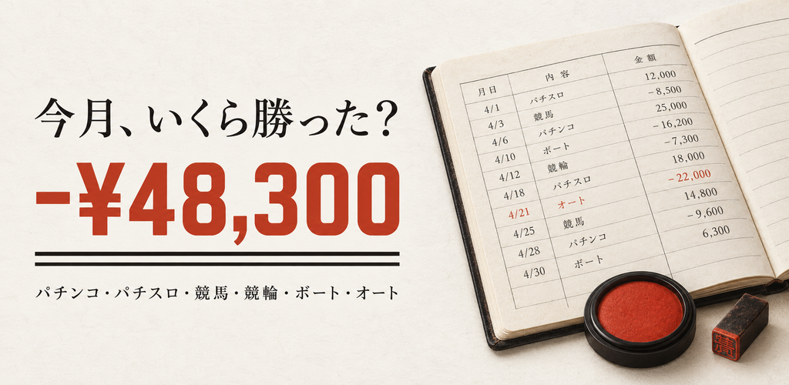

カチマケ
パチンコ・パチスロ・競馬・競輪・ボートレース・オートレースの収支管理
投資と回収、2つの金額を入れるだけで、その月の収支・回収率・時給が出ます。赤字は朱、黒字は墨。帳簿と同じ読み方です。

- 日ごとの収支がひと目で分かるカレンダー
- 月の負けの上限を決めておくと、近づいたときに知らせる
- 店舗・機種・曜日・券種ごとの収支(有料プラン)
- 小役カウンターと設定の推測(推測は有料プラン)
- 記入は端末の中だけに保存
App Store と Google Play で公開準備中です。
サポート ・ プライバシーポリシー ・ 利用規約
パチンコ・パチスロは18歳未満、公営競技の投票は20歳未満の方は法律で禁止されています。本アプリは収支を記録するための道具で、賭け事そのものは提供しません。